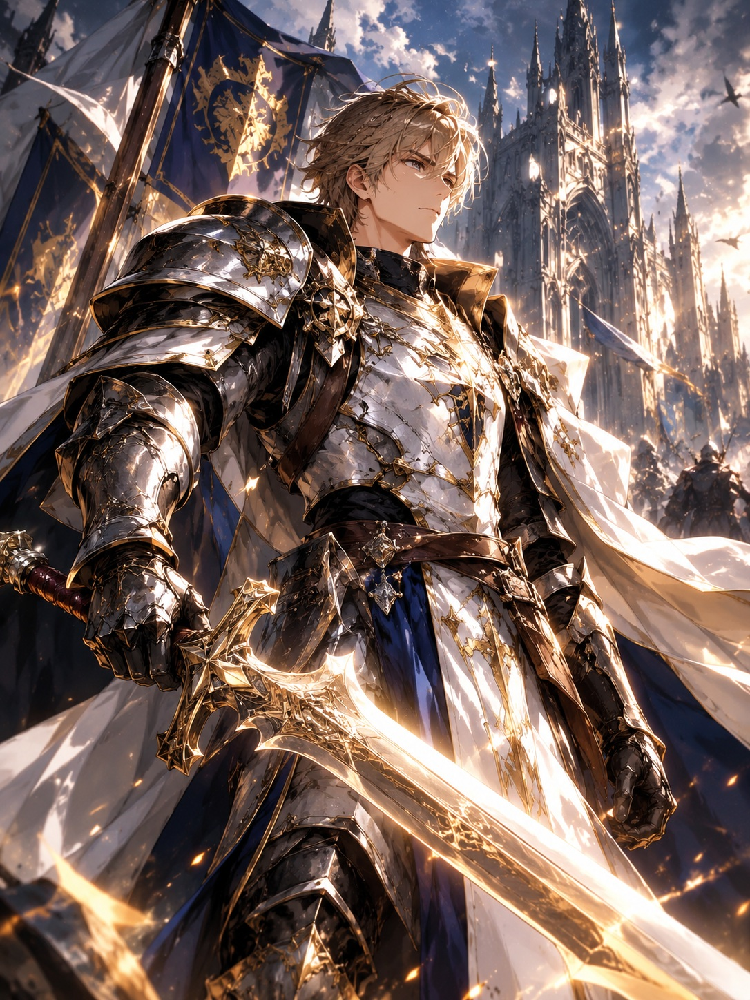

命運職業
選擇不同戰鬥風格，探索專屬於你的冒險方式。
CHOOSE YOUR PATH當永夜降臨，命運再次甦醒
A NEW DARK FANTASY BEGINS
ECLIPSE ONLINE
當太陽被黑暗吞噬，古老的預言再次甦醒。
拿起你的武器，踏上尋回世界黎明的旅程。
YOUR LEGEND BEGINS IN THE ETERNAL NIGHT
THE LOST CHRONICLES
光明並未消失，只是被遺忘在歷史的盡頭。
THE AGE OF ECLIPSE
在遙遠的過去，光明與暗影維持著脆弱的平衡。 直到某一天，天空中的太陽失去了光芒， 古老的封印開始崩解，沉睡的力量逐一甦醒。
王國陷入紛爭，遺跡傳來低語，未知的魔物在荒野徘徊。 你將選擇自己的道路，尋找永夜背後的真相， 並決定這個世界最後的命運。
前往探索世界 ↗CHOOSE YOUR DESTINY
選擇你的道路，在永夜之中留下名字。

CLASS / 01HOLY GUARDIAN
TEMPLE KNIGHT
身披古老誓約的重裝戰士，以堅定意志守護同伴， 在黑暗最深處築起不可撼動的防線。
BEYOND THE KNOWN WORLD
每一片土地，都埋藏著永夜留下的秘密。
REGION ARCHIVE
REGION 01 / 04
THE DUSK CAPITAL
曾經繁盛的王國中心，如今仍有守衛與旅人試圖在漫長黑夜中維持秩序。
此區域資訊為網站世界觀展示內容，並非遊戲內即時地圖。
A WORLD WITHOUT END
每一次選擇，都可能改變你在永夜中的旅程。
選擇不同戰鬥風格，探索專屬於你的冒險方式。
CHOOSE YOUR PATH深入古老遺跡與未知之境，追尋被掩埋的歷史。
DISCOVER THE UNKNOWN揭開黑暗背後的秘密，尋找世界重新迎向黎明的可能。
UNVEIL THE ECLIPSELATEST TRANSMISSIONS
掌握永夜紀元的最新消息。
世界觀情報
太陽失去光芒，古老的封印逐漸崩解。踏上旅程，尋找世界改變的原因。
閱讀世界觀 ↗職業情報
從聖殿騎士、暗影刺客到符文法師，了解不同職業的定位與特色。
查看職業 ↗探索情報
從暮光王城出發，前往幽影森林、失落遺跡與深淵邊境。
探索地圖 ↗以上為網站展示用內容，並非已確認的遊戲營運公告或實際活動日期。